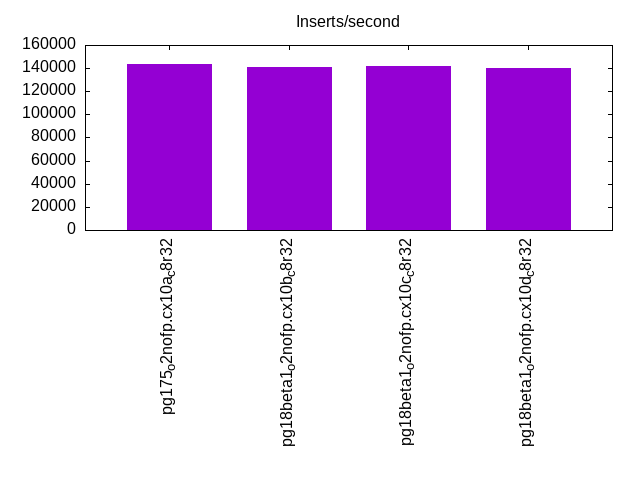
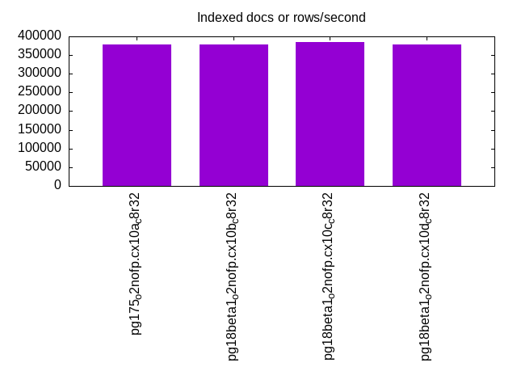
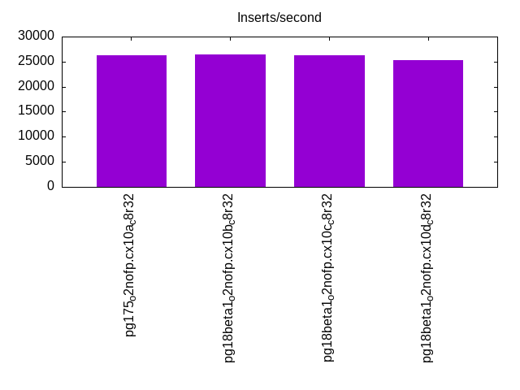
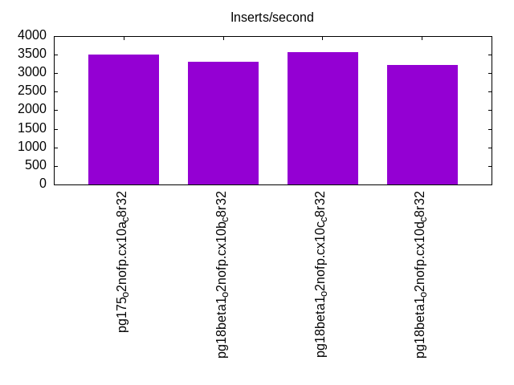
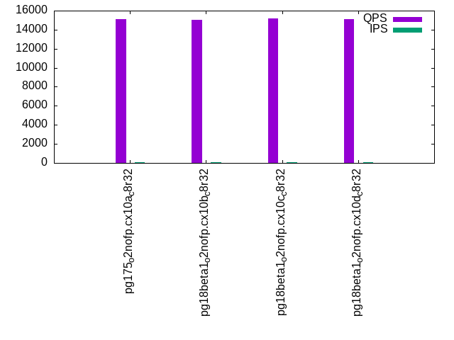
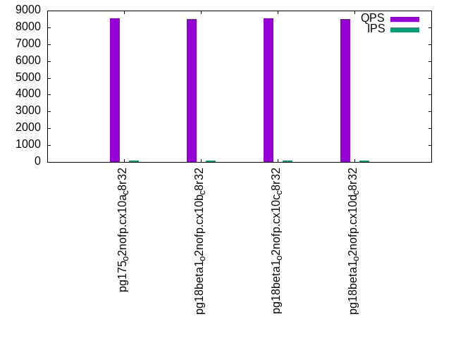
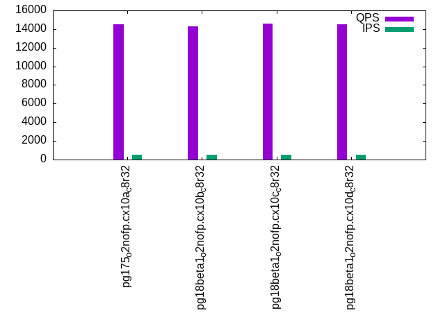
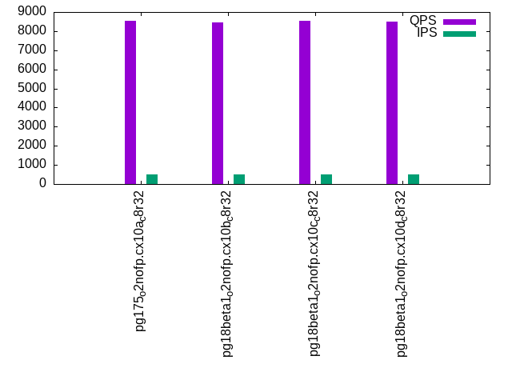
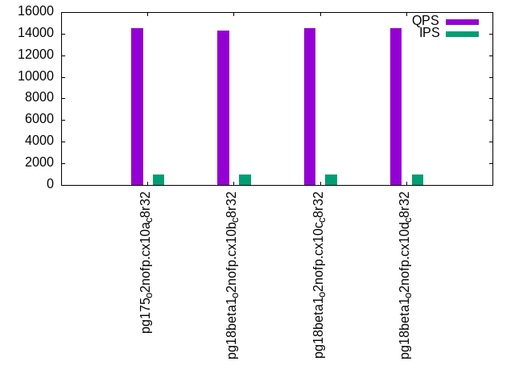
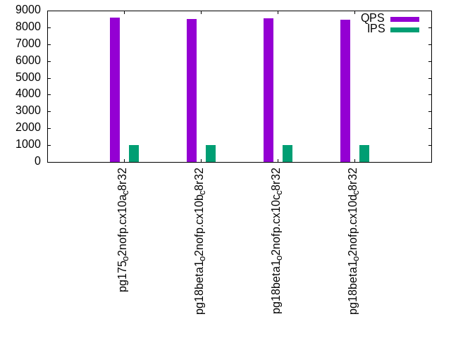

This is a report for the insert benchmark with 20M docs and 1 client(s). It is generated by scripts (bash, awk, sed) and Tufte might not be impressed. An overview of the insert benchmark is here and a short update is here. Below, by DBMS, I mean DBMS+version.config. An example is my8020.c10b40 where my means MySQL, 8020 is version 8.0.20 and c10b40 is the name for the configuration file.
The test server has 8 AMD cores, 32G RAM and an NVMe SSD. It is described here as the PN53. The benchmark was run with 1 client and there were 1 or 3 connections per client (1 for queries or inserts without rate limits, 1+1 for rate limited inserts+deletes). It uses 1 table. It loads 20M rows per table without secondary indexes, creates 3 secondary indexes per table, then inserts 40m+10m rows per table with a delete per insert to avoid growing the table. It then does 6 read+write tests for 1800s each that do queries as fast as possible with 100,100,500,500,1000,1000 inserts/s and the same for deletes/s per client concurrent with the queries. The database is cached by Postgres. Clients and the DBMS share one server. The per-database configs are in the per-database subdirectories here.
The tested DBMS are:
The numbers are inserts/s for l.i0, l.i1 and l.i2, indexed docs (or rows) /s for l.x and queries/s for qr100, qp100 thru qr1000, qp1000" The values are the average rate over the entire test for inserts (IPS) and queries (QPS). The range of values for IPS and QPS is split into 3 parts: bottom 25%, middle 50%, top 25%. Values in the bottom 25% have a red background, values in the top 25% have a green background and values in the middle have no color. A gray background is used for values that can be ignored because the DBMS did not sustain the target insert rate. Red backgrounds are not used when the minimum value is within 80% of the max value.
| dbms | l.i0 | l.x | l.i1 | l.i2 | qr100 | qp100 | qr500 | qp500 | qr1000 | qp1000 |
|---|---|---|---|---|---|---|---|---|---|---|
| pg175_o2nofp.cx10a_c8r32 | 143885 | 377360 | 26230 | 3512 | 15099 | 8524 | 14502 | 8534 | 14506 | 8576 |
| pg18beta1_o2nofp.cx10b_c8r32 | 140845 | 377360 | 26420 | 3309 | 15000 | 8486 | 14315 | 8465 | 14313 | 8492 |
| pg18beta1_o2nofp.cx10c_c8r32 | 141844 | 384617 | 26333 | 3565 | 15159 | 8531 | 14610 | 8524 | 14499 | 8534 |
| pg18beta1_o2nofp.cx10d_c8r32 | 139860 | 377360 | 25284 | 3221 | 15091 | 8496 | 14524 | 8513 | 14478 | 8438 |
This table has relative throughput, throughput for the DBMS relative to the DBMS in the first line, using the absolute throughput from the previous table. Values less than 0.95 have a yellow background. Values greater than 1.05 have a blue background.
| dbms | l.i0 | l.x | l.i1 | l.i2 | qr100 | qp100 | qr500 | qp500 | qr1000 | qp1000 |
|---|---|---|---|---|---|---|---|---|---|---|
| pg175_o2nofp.cx10a_c8r32 | 1.00 | 1.00 | 1.00 | 1.00 | 1.00 | 1.00 | 1.00 | 1.00 | 1.00 | 1.00 |
| pg18beta1_o2nofp.cx10b_c8r32 | 0.98 | 1.00 | 1.01 | 0.94 | 0.99 | 1.00 | 0.99 | 0.99 | 0.99 | 0.99 |
| pg18beta1_o2nofp.cx10c_c8r32 | 0.99 | 1.02 | 1.00 | 1.02 | 1.00 | 1.00 | 1.01 | 1.00 | 1.00 | 1.00 |
| pg18beta1_o2nofp.cx10d_c8r32 | 0.97 | 1.00 | 0.96 | 0.92 | 1.00 | 1.00 | 1.00 | 1.00 | 1.00 | 0.98 |
This lists the average rate of inserts/s for the tests that do inserts concurrent with queries. For such tests the query rate is listed in the table above. The read+write tests are setup so that the insert rate should match the target rate every second. Cells that are not at least 95% of the target have a red background to indicate a failure to satisfy the target.
| dbms | qr100.L1 | qp100.L2 | qr500.L3 | qp500.L4 | qr1000.L5 | qp1000.L6 |
|---|---|---|---|---|---|---|
| pg175_o2nofp.cx10a_c8r32 | 100 | 100 | 500 | 500 | 1000 | 1000 |
| pg18beta1_o2nofp.cx10b_c8r32 | 100 | 100 | 500 | 500 | 1000 | 1000 |
| pg18beta1_o2nofp.cx10c_c8r32 | 100 | 100 | 500 | 500 | 1000 | 1000 |
| pg18beta1_o2nofp.cx10d_c8r32 | 100 | 100 | 500 | 500 | 1000 | 1000 |
| target | 100 | 100 | 500 | 500 | 1000 | 1000 |
l.i0: load without secondary indexes. Graphs for performance per 1-second interval are here.
Average throughput:
Insert response time histogram: each cell has the percentage of responses that take <= the time in the header and max is the max response time in seconds. For the max column values in the top 25% of the range have a red background and in the bottom 25% of the range have a green background. The red background is not used when the min value is within 80% of the max value.
| dbms | 256us | 1ms | 4ms | 16ms | 64ms | 256ms | 1s | 4s | 16s | gt | max |
|---|---|---|---|---|---|---|---|---|---|---|---|
| pg175_o2nofp.cx10a_c8r32 | 99.992 | 0.007 | 0.002 | ||||||||
| pg18beta1_o2nofp.cx10b_c8r32 | 99.993 | 0.007 | 0.002 | ||||||||
| pg18beta1_o2nofp.cx10c_c8r32 | 99.991 | 0.009 | 0.002 | ||||||||
| pg18beta1_o2nofp.cx10d_c8r32 | 99.981 | 0.019 | 0.003 |
Performance metrics for the DBMS listed above. Some are normalized by throughput, others are not. Legend for results is here.
ips qps rps rmbps wps wmbps rpq rkbpq wpi wkbpi csps cpups cspq cpupq dbgb1 dbgb2 rss maxop p50 p99 tag 143885 0 0 0.0 538.9 61.1 0.000 0.000 0.004 0.435 14748 20.0 0.103 11 1.9 5.2 1.7 0.002 144680 137678 pg175_o2nofp.cx10a_c8r32 140845 0 0 0.0 528.8 60.0 0.000 0.000 0.004 0.436 14502 19.8 0.103 11 1.9 5.2 1.6 0.002 142080 135378 pg18beta1_o2nofp.cx10b_c8r32 141844 0 0 0.0 532.0 60.3 0.000 0.000 0.004 0.436 14552 20.0 0.103 11 1.9 5.2 1.7 0.002 142781 135988 pg18beta1_o2nofp.cx10c_c8r32 139860 0 0 0.0 527.5 59.8 0.000 0.000 0.004 0.438 14392 19.7 0.103 11 1.9 5.2 1.6 0.003 142081 133485 pg18beta1_o2nofp.cx10d_c8r32
l.x: create secondary indexes.
Average throughput:
Performance metrics for the DBMS listed above. Some are normalized by throughput, others are not. Legend for results is here.
ips qps rps rmbps wps wmbps rpq rkbpq wpi wkbpi csps cpups cspq cpupq dbgb1 dbgb2 rss maxop p50 p99 tag 377360 0 0 0.0 580.2 71.0 0.000 0.000 0.002 0.193 1841 11.5 0.005 2 3.9 8.9 2.1 0.002 NA NA pg175_o2nofp.cx10a_c8r32 377360 0 0 0.0 607.8 74.3 0.000 0.000 0.002 0.202 1916 11.5 0.005 2 3.9 8.9 2.1 0.002 NA NA pg18beta1_o2nofp.cx10b_c8r32 384617 0 0 0.0 606.1 74.2 0.000 0.000 0.002 0.197 1947 11.5 0.005 2 3.9 8.9 2.1 0.002 NA NA pg18beta1_o2nofp.cx10c_c8r32 377360 0 0 0.0 603.1 73.8 0.000 0.000 0.002 0.200 1958 11.4 0.005 2 3.9 8.9 2.1 0.002 NA NA pg18beta1_o2nofp.cx10d_c8r32
l.i1: continue load after secondary indexes created with 50 inserts per transaction. Graphs for performance per 1-second interval are here.
Average throughput:
Insert response time histogram: each cell has the percentage of responses that take <= the time in the header and max is the max response time in seconds. For the max column values in the top 25% of the range have a red background and in the bottom 25% of the range have a green background. The red background is not used when the min value is within 80% of the max value.
| dbms | 256us | 1ms | 4ms | 16ms | 64ms | 256ms | 1s | 4s | 16s | gt | max |
|---|---|---|---|---|---|---|---|---|---|---|---|
| pg175_o2nofp.cx10a_c8r32 | 61.381 | 38.616 | 0.002 | 0.001 | 0.037 | ||||||
| pg18beta1_o2nofp.cx10b_c8r32 | 62.640 | 37.357 | 0.002 | 0.001 | 0.033 | ||||||
| pg18beta1_o2nofp.cx10c_c8r32 | 62.628 | 37.368 | 0.003 | 0.001 | 0.031 | ||||||
| pg18beta1_o2nofp.cx10d_c8r32 | 66.225 | 33.766 | 0.005 | 0.005 | 0.031 |
Delete response time histogram: each cell has the percentage of responses that take <= the time in the header and max is the max response time in seconds. For the max column values in the top 25% of the range have a red background and in the bottom 25% of the range have a green background. The red background is not used when the min value is within 80% of the max value.
| dbms | 256us | 1ms | 4ms | 16ms | 64ms | 256ms | 1s | 4s | 16s | gt | max |
|---|---|---|---|---|---|---|---|---|---|---|---|
| pg175_o2nofp.cx10a_c8r32 | 26.239 | 73.651 | 0.109 | 0.001 | 0.037 | ||||||
| pg18beta1_o2nofp.cx10b_c8r32 | 28.797 | 69.317 | 1.885 | 0.001 | 0.039 | ||||||
| pg18beta1_o2nofp.cx10c_c8r32 | 27.986 | 71.999 | 0.015 | 0.001 | 0.030 | ||||||
| pg18beta1_o2nofp.cx10d_c8r32 | 28.538 | 58.133 | 13.325 | 0.003 | 0.030 |
Performance metrics for the DBMS listed above. Some are normalized by throughput, others are not. Legend for results is here.
ips qps rps rmbps wps wmbps rpq rkbpq wpi wkbpi csps cpups cspq cpupq dbgb1 dbgb2 rss maxop p50 p99 tag 26230 0 0 0.0 292.2 32.2 0.000 0.000 0.011 1.257 11005 21.9 0.420 67 5.3 32.1 2.4 0.037 20547 13448 pg175_o2nofp.cx10a_c8r32 26420 0 0 0.0 297.1 32.8 0.000 0.000 0.011 1.273 11108 21.9 0.420 66 5.3 32.0 1.5 0.033 20347 10599 pg18beta1_o2nofp.cx10b_c8r32 26333 0 0 0.0 295.7 32.7 0.000 0.000 0.011 1.272 11174 21.9 0.424 67 5.4 32.0 1.5 0.031 20198 14098 pg18beta1_o2nofp.cx10c_c8r32 25284 0 0 0.0 284.7 31.6 0.000 0.000 0.011 1.279 10680 21.7 0.422 69 5.4 32.1 4.5 0.031 18598 9849 pg18beta1_o2nofp.cx10d_c8r32
l.i2: continue load after secondary indexes created with 5 inserts per transaction. Graphs for performance per 1-second interval are here.
Average throughput:
Insert response time histogram: each cell has the percentage of responses that take <= the time in the header and max is the max response time in seconds. For the max column values in the top 25% of the range have a red background and in the bottom 25% of the range have a green background. The red background is not used when the min value is within 80% of the max value.
| dbms | 256us | 1ms | 4ms | 16ms | 64ms | 256ms | 1s | 4s | 16s | gt | max |
|---|---|---|---|---|---|---|---|---|---|---|---|
| pg175_o2nofp.cx10a_c8r32 | 69.393 | 30.607 | nonzero | nonzero | nonzero | 0.036 | |||||
| pg18beta1_o2nofp.cx10b_c8r32 | 63.897 | 36.103 | nonzero | nonzero | nonzero | 0.021 | |||||
| pg18beta1_o2nofp.cx10c_c8r32 | 70.842 | 29.158 | nonzero | nonzero | nonzero | 0.017 | |||||
| pg18beta1_o2nofp.cx10d_c8r32 | 68.943 | 31.056 | nonzero | nonzero | 0.006 |
Delete response time histogram: each cell has the percentage of responses that take <= the time in the header and max is the max response time in seconds. For the max column values in the top 25% of the range have a red background and in the bottom 25% of the range have a green background. The red background is not used when the min value is within 80% of the max value.
| dbms | 256us | 1ms | 4ms | 16ms | 64ms | 256ms | 1s | 4s | 16s | gt | max |
|---|---|---|---|---|---|---|---|---|---|---|---|
| pg175_o2nofp.cx10a_c8r32 | 1.436 | 38.093 | 60.470 | nonzero | nonzero | 0.036 | |||||
| pg18beta1_o2nofp.cx10b_c8r32 | 1.300 | 38.653 | 59.253 | 0.794 | 0.006 | ||||||
| pg18beta1_o2nofp.cx10c_c8r32 | 1.506 | 39.275 | 59.219 | nonzero | nonzero | 0.017 | |||||
| pg18beta1_o2nofp.cx10d_c8r32 | 1.020 | 40.682 | 56.109 | 2.189 | 0.010 |
Performance metrics for the DBMS listed above. Some are normalized by throughput, others are not. Legend for results is here.
ips qps rps rmbps wps wmbps rpq rkbpq wpi wkbpi csps cpups cspq cpupq dbgb1 dbgb2 rss maxop p50 p99 tag 3512 0 0 0.0 59.7 6.0 0.000 0.000 0.017 1.758 13692 15.7 3.898 358 5.4 35.2 0.3 0.036 2595 1720 pg175_o2nofp.cx10a_c8r32 3309 0 0 0.0 56.1 5.6 0.000 0.000 0.017 1.743 12952 15.7 3.914 380 5.4 34.8 0.3 0.021 2320 1175 pg18beta1_o2nofp.cx10b_c8r32 3565 0 0 0.0 60.3 6.1 0.000 0.000 0.017 1.759 13897 15.7 3.898 352 5.4 35.1 1.5 0.017 2590 1865 pg18beta1_o2nofp.cx10c_c8r32 3221 0 0 0.0 56.0 5.5 0.000 0.000 0.017 1.760 12590 15.4 3.909 383 5.4 34.7 5.2 0.006 2205 1165 pg18beta1_o2nofp.cx10d_c8r32
qr100.L1: range queries with 100 insert/s per client. Graphs for performance per 1-second interval are here.
Average throughput:
Query response time histogram: each cell has the percentage of responses that take <= the time in the header and max is the max response time in seconds. For max values in the top 25% of the range have a red background and in the bottom 25% of the range have a green background. The red background is not used when the min value is within 80% of the max value.
| dbms | 256us | 1ms | 4ms | 16ms | 64ms | 256ms | 1s | 4s | 16s | gt | max |
|---|---|---|---|---|---|---|---|---|---|---|---|
| pg175_o2nofp.cx10a_c8r32 | 100.000 | nonzero | 0.001 | ||||||||
| pg18beta1_o2nofp.cx10b_c8r32 | 100.000 | nonzero | 0.001 | ||||||||
| pg18beta1_o2nofp.cx10c_c8r32 | 100.000 | nonzero | nonzero | 0.001 | |||||||
| pg18beta1_o2nofp.cx10d_c8r32 | 100.000 | nonzero | 0.001 |
Insert response time histogram: each cell has the percentage of responses that take <= the time in the header and max is the max response time in seconds. For max values in the top 25% of the range have a red background and in the bottom 25% of the range have a green background. The red background is not used when the min value is within 80% of the max value.
| dbms | 256us | 1ms | 4ms | 16ms | 64ms | 256ms | 1s | 4s | 16s | gt | max |
|---|---|---|---|---|---|---|---|---|---|---|---|
| pg175_o2nofp.cx10a_c8r32 | 1.278 | 98.667 | 0.056 | 0.005 | |||||||
| pg18beta1_o2nofp.cx10b_c8r32 | 4.389 | 95.583 | 0.028 | 0.006 | |||||||
| pg18beta1_o2nofp.cx10c_c8r32 | 4.444 | 95.500 | 0.056 | 0.006 | |||||||
| pg18beta1_o2nofp.cx10d_c8r32 | 1.028 | 98.917 | 0.056 | 0.006 |
Delete response time histogram: each cell has the percentage of responses that take <= the time in the header and max is the max response time in seconds. For max values in the top 25% of the range have a red background and in the bottom 25% of the range have a green background. The red background is not used when the min value is within 80% of the max value.
| dbms | 256us | 1ms | 4ms | 16ms | 64ms | 256ms | 1s | 4s | 16s | gt | max |
|---|---|---|---|---|---|---|---|---|---|---|---|
| pg175_o2nofp.cx10a_c8r32 | 52.472 | 47.528 | 0.002 | ||||||||
| pg18beta1_o2nofp.cx10b_c8r32 | 55.139 | 44.861 | 0.002 | ||||||||
| pg18beta1_o2nofp.cx10c_c8r32 | 50.139 | 49.861 | 0.002 | ||||||||
| pg18beta1_o2nofp.cx10d_c8r32 | 48.000 | 52.000 | 0.002 |
Performance metrics for the DBMS listed above. Some are normalized by throughput, others are not. Legend for results is here.
ips qps rps rmbps wps wmbps rpq rkbpq wpi wkbpi csps cpups cspq cpupq dbgb1 dbgb2 rss maxop p50 p99 tag 100 15099 0 0.0 10.4 0.6 0.000 0.000 0.104 6.259 57689 12.4 3.821 66 5.4 35.2 0.1 0.001 15102 14878 pg175_o2nofp.cx10a_c8r32 100 15000 0 0.0 10.5 0.6 0.000 0.000 0.105 6.262 57298 12.4 3.820 66 5.4 34.8 0.1 0.001 15006 14734 pg18beta1_o2nofp.cx10b_c8r32 100 15159 0 0.0 10.5 0.6 0.000 0.000 0.105 6.266 57904 12.4 3.820 65 5.4 35.1 0.1 0.001 15166 14958 pg18beta1_o2nofp.cx10c_c8r32 100 15091 0 0.0 10.5 0.6 0.000 0.000 0.105 6.265 57652 12.4 3.820 66 5.4 34.7 0.1 0.001 15102 14814 pg18beta1_o2nofp.cx10d_c8r32
qp100.L2: point queries with 100 insert/s per client. Graphs for performance per 1-second interval are here.
Average throughput:
Query response time histogram: each cell has the percentage of responses that take <= the time in the header and max is the max response time in seconds. For max values in the top 25% of the range have a red background and in the bottom 25% of the range have a green background. The red background is not used when the min value is within 80% of the max value.
| dbms | 256us | 1ms | 4ms | 16ms | 64ms | 256ms | 1s | 4s | 16s | gt | max |
|---|---|---|---|---|---|---|---|---|---|---|---|
| pg175_o2nofp.cx10a_c8r32 | 99.994 | 0.006 | 0.001 | ||||||||
| pg18beta1_o2nofp.cx10b_c8r32 | 99.995 | 0.005 | 0.001 | ||||||||
| pg18beta1_o2nofp.cx10c_c8r32 | 99.996 | 0.004 | 0.001 | ||||||||
| pg18beta1_o2nofp.cx10d_c8r32 | 99.993 | 0.007 | nonzero | 0.001 |
Insert response time histogram: each cell has the percentage of responses that take <= the time in the header and max is the max response time in seconds. For max values in the top 25% of the range have a red background and in the bottom 25% of the range have a green background. The red background is not used when the min value is within 80% of the max value.
| dbms | 256us | 1ms | 4ms | 16ms | 64ms | 256ms | 1s | 4s | 16s | gt | max |
|---|---|---|---|---|---|---|---|---|---|---|---|
| pg175_o2nofp.cx10a_c8r32 | 99.750 | 0.250 | 0.010 | ||||||||
| pg18beta1_o2nofp.cx10b_c8r32 | 99.944 | 0.056 | 0.005 | ||||||||
| pg18beta1_o2nofp.cx10c_c8r32 | 99.972 | 0.028 | 0.006 | ||||||||
| pg18beta1_o2nofp.cx10d_c8r32 | 99.944 | 0.056 | 0.005 |
Delete response time histogram: each cell has the percentage of responses that take <= the time in the header and max is the max response time in seconds. For max values in the top 25% of the range have a red background and in the bottom 25% of the range have a green background. The red background is not used when the min value is within 80% of the max value.
| dbms | 256us | 1ms | 4ms | 16ms | 64ms | 256ms | 1s | 4s | 16s | gt | max |
|---|---|---|---|---|---|---|---|---|---|---|---|
| pg175_o2nofp.cx10a_c8r32 | 14.944 | 85.028 | 0.028 | 0.005 | |||||||
| pg18beta1_o2nofp.cx10b_c8r32 | 12.611 | 87.361 | 0.028 | 0.005 | |||||||
| pg18beta1_o2nofp.cx10c_c8r32 | 4.083 | 95.889 | 0.028 | 0.004 | |||||||
| pg18beta1_o2nofp.cx10d_c8r32 | 19.056 | 80.917 | 0.028 | 0.004 |
Performance metrics for the DBMS listed above. Some are normalized by throughput, others are not. Legend for results is here.
ips qps rps rmbps wps wmbps rpq rkbpq wpi wkbpi csps cpups cspq cpupq dbgb1 dbgb2 rss maxop p50 p99 tag 100 8524 0 0.0 39.3 1.4 0.000 0.000 0.393 14.169 32959 12.4 3.867 116 5.4 35.2 0.2 0.001 8527 8463 pg175_o2nofp.cx10a_c8r32 100 8486 0 0.0 39.2 1.4 0.000 0.000 0.392 14.103 32792 12.4 3.864 117 5.4 34.8 0.1 0.001 8495 8415 pg18beta1_o2nofp.cx10b_c8r32 100 8531 0 0.0 39.3 1.4 0.000 0.000 0.393 14.121 32983 12.4 3.866 116 5.4 35.1 0.1 0.001 8542 8463 pg18beta1_o2nofp.cx10c_c8r32 100 8496 0 0.0 39.3 1.4 0.000 0.000 0.393 14.122 32849 12.4 3.867 117 5.4 34.7 0.1 0.001 8495 8431 pg18beta1_o2nofp.cx10d_c8r32
qr500.L3: range queries with 500 insert/s per client. Graphs for performance per 1-second interval are here.
Average throughput:
Query response time histogram: each cell has the percentage of responses that take <= the time in the header and max is the max response time in seconds. For max values in the top 25% of the range have a red background and in the bottom 25% of the range have a green background. The red background is not used when the min value is within 80% of the max value.
| dbms | 256us | 1ms | 4ms | 16ms | 64ms | 256ms | 1s | 4s | 16s | gt | max |
|---|---|---|---|---|---|---|---|---|---|---|---|
| pg175_o2nofp.cx10a_c8r32 | 99.999 | 0.001 | nonzero | 0.002 | |||||||
| pg18beta1_o2nofp.cx10b_c8r32 | 99.999 | 0.001 | nonzero | 0.002 | |||||||
| pg18beta1_o2nofp.cx10c_c8r32 | 99.999 | 0.001 | nonzero | 0.003 | |||||||
| pg18beta1_o2nofp.cx10d_c8r32 | 99.999 | 0.001 | nonzero | nonzero | 0.008 |
Insert response time histogram: each cell has the percentage of responses that take <= the time in the header and max is the max response time in seconds. For max values in the top 25% of the range have a red background and in the bottom 25% of the range have a green background. The red background is not used when the min value is within 80% of the max value.
| dbms | 256us | 1ms | 4ms | 16ms | 64ms | 256ms | 1s | 4s | 16s | gt | max |
|---|---|---|---|---|---|---|---|---|---|---|---|
| pg175_o2nofp.cx10a_c8r32 | 42.294 | 57.478 | 0.228 | 0.011 | |||||||
| pg18beta1_o2nofp.cx10b_c8r32 | 53.678 | 46.289 | 0.033 | 0.010 | |||||||
| pg18beta1_o2nofp.cx10c_c8r32 | 56.161 | 43.811 | 0.028 | 0.009 | |||||||
| pg18beta1_o2nofp.cx10d_c8r32 | 50.967 | 48.839 | 0.194 | 0.010 |
Delete response time histogram: each cell has the percentage of responses that take <= the time in the header and max is the max response time in seconds. For max values in the top 25% of the range have a red background and in the bottom 25% of the range have a green background. The red background is not used when the min value is within 80% of the max value.
| dbms | 256us | 1ms | 4ms | 16ms | 64ms | 256ms | 1s | 4s | 16s | gt | max |
|---|---|---|---|---|---|---|---|---|---|---|---|
| pg175_o2nofp.cx10a_c8r32 | 21.400 | 77.417 | 1.183 | 0.012 | |||||||
| pg18beta1_o2nofp.cx10b_c8r32 | 21.939 | 77.272 | 0.789 | 0.013 | |||||||
| pg18beta1_o2nofp.cx10c_c8r32 | 24.533 | 74.967 | 0.500 | 0.006 | |||||||
| pg18beta1_o2nofp.cx10d_c8r32 | 22.956 | 76.617 | 0.428 | 0.011 |
Performance metrics for the DBMS listed above. Some are normalized by throughput, others are not. Legend for results is here.
ips qps rps rmbps wps wmbps rpq rkbpq wpi wkbpi csps cpups cspq cpupq dbgb1 dbgb2 rss maxop p50 p99 tag 500 14502 0 0.0 49.6 1.8 0.000 0.000 0.099 3.749 55534 13.0 3.829 72 5.5 35.2 0.3 0.002 14446 13806 pg175_o2nofp.cx10a_c8r32 500 14315 0 0.0 49.5 1.8 0.000 0.000 0.099 3.669 54784 12.9 3.827 72 5.4 34.8 0.3 0.002 14286 13582 pg18beta1_o2nofp.cx10b_c8r32 500 14610 0 0.0 49.5 1.8 0.000 0.000 0.099 3.680 55939 13.0 3.829 71 5.4 35.1 4.6 0.003 14558 13822 pg18beta1_o2nofp.cx10c_c8r32 500 14524 0 0.0 49.4 1.8 0.000 0.000 0.099 3.729 55585 12.9 3.827 71 5.5 34.8 0.3 0.008 14477 13758 pg18beta1_o2nofp.cx10d_c8r32
qp500.L4: point queries with 500 insert/s per client. Graphs for performance per 1-second interval are here.
Average throughput:
Query response time histogram: each cell has the percentage of responses that take <= the time in the header and max is the max response time in seconds. For max values in the top 25% of the range have a red background and in the bottom 25% of the range have a green background. The red background is not used when the min value is within 80% of the max value.
| dbms | 256us | 1ms | 4ms | 16ms | 64ms | 256ms | 1s | 4s | 16s | gt | max |
|---|---|---|---|---|---|---|---|---|---|---|---|
| pg175_o2nofp.cx10a_c8r32 | 99.991 | 0.009 | nonzero | 0.002 | |||||||
| pg18beta1_o2nofp.cx10b_c8r32 | 99.991 | 0.009 | nonzero | nonzero | 0.022 | ||||||
| pg18beta1_o2nofp.cx10c_c8r32 | 99.990 | 0.010 | nonzero | 0.002 | |||||||
| pg18beta1_o2nofp.cx10d_c8r32 | 99.991 | 0.009 | nonzero | 0.002 |
Insert response time histogram: each cell has the percentage of responses that take <= the time in the header and max is the max response time in seconds. For max values in the top 25% of the range have a red background and in the bottom 25% of the range have a green background. The red background is not used when the min value is within 80% of the max value.
| dbms | 256us | 1ms | 4ms | 16ms | 64ms | 256ms | 1s | 4s | 16s | gt | max |
|---|---|---|---|---|---|---|---|---|---|---|---|
| pg175_o2nofp.cx10a_c8r32 | 35.150 | 64.806 | 0.044 | 0.010 | |||||||
| pg18beta1_o2nofp.cx10b_c8r32 | 30.678 | 69.233 | 0.089 | 0.011 | |||||||
| pg18beta1_o2nofp.cx10c_c8r32 | 36.544 | 63.289 | 0.167 | 0.011 | |||||||
| pg18beta1_o2nofp.cx10d_c8r32 | 34.850 | 65.139 | 0.011 | 0.005 |
Delete response time histogram: each cell has the percentage of responses that take <= the time in the header and max is the max response time in seconds. For max values in the top 25% of the range have a red background and in the bottom 25% of the range have a green background. The red background is not used when the min value is within 80% of the max value.
| dbms | 256us | 1ms | 4ms | 16ms | 64ms | 256ms | 1s | 4s | 16s | gt | max |
|---|---|---|---|---|---|---|---|---|---|---|---|
| pg175_o2nofp.cx10a_c8r32 | 20.233 | 78.811 | 0.956 | 0.005 | |||||||
| pg18beta1_o2nofp.cx10b_c8r32 | 21.061 | 78.272 | 0.667 | 0.011 | |||||||
| pg18beta1_o2nofp.cx10c_c8r32 | 20.750 | 78.694 | 0.556 | 0.011 | |||||||
| pg18beta1_o2nofp.cx10d_c8r32 | 17.978 | 81.661 | 0.361 | 0.006 |
Performance metrics for the DBMS listed above. Some are normalized by throughput, others are not. Legend for results is here.
ips qps rps rmbps wps wmbps rpq rkbpq wpi wkbpi csps cpups cspq cpupq dbgb1 dbgb2 rss maxop p50 p99 tag 500 8534 0 0.0 27.4 2.2 0.000 0.000 0.055 4.598 33103 12.5 3.879 117 5.5 34.0 0.3 0.002 8543 8463 pg175_o2nofp.cx10a_c8r32 500 8465 0 0.0 28.2 2.2 0.000 0.000 0.056 4.597 32828 12.4 3.878 117 5.4 34.0 0.3 0.022 8463 8383 pg18beta1_o2nofp.cx10b_c8r32 500 8524 0 0.0 28.4 2.3 0.000 0.000 0.057 4.639 33051 12.4 3.877 116 5.5 34.0 0.3 0.002 8526 8463 pg18beta1_o2nofp.cx10c_c8r32 500 8513 0 0.0 28.3 2.2 0.000 0.000 0.057 4.571 33002 12.4 3.877 117 5.5 34.1 0.3 0.002 8511 8431 pg18beta1_o2nofp.cx10d_c8r32
qr1000.L5: range queries with 1000 insert/s per client. Graphs for performance per 1-second interval are here.
Average throughput:
Query response time histogram: each cell has the percentage of responses that take <= the time in the header and max is the max response time in seconds. For max values in the top 25% of the range have a red background and in the bottom 25% of the range have a green background. The red background is not used when the min value is within 80% of the max value.
| dbms | 256us | 1ms | 4ms | 16ms | 64ms | 256ms | 1s | 4s | 16s | gt | max |
|---|---|---|---|---|---|---|---|---|---|---|---|
| pg175_o2nofp.cx10a_c8r32 | 99.999 | 0.001 | nonzero | 0.002 | |||||||
| pg18beta1_o2nofp.cx10b_c8r32 | 99.997 | 0.003 | nonzero | nonzero | 0.007 | ||||||
| pg18beta1_o2nofp.cx10c_c8r32 | 99.997 | 0.003 | nonzero | 0.003 | |||||||
| pg18beta1_o2nofp.cx10d_c8r32 | 99.997 | 0.003 | nonzero | 0.003 |
Insert response time histogram: each cell has the percentage of responses that take <= the time in the header and max is the max response time in seconds. For max values in the top 25% of the range have a red background and in the bottom 25% of the range have a green background. The red background is not used when the min value is within 80% of the max value.
| dbms | 256us | 1ms | 4ms | 16ms | 64ms | 256ms | 1s | 4s | 16s | gt | max |
|---|---|---|---|---|---|---|---|---|---|---|---|
| pg175_o2nofp.cx10a_c8r32 | 66.511 | 33.478 | 0.011 | 0.010 | |||||||
| pg18beta1_o2nofp.cx10b_c8r32 | 69.519 | 30.456 | 0.025 | 0.010 | |||||||
| pg18beta1_o2nofp.cx10c_c8r32 | 70.344 | 29.647 | 0.008 | 0.009 | |||||||
| pg18beta1_o2nofp.cx10d_c8r32 | 69.528 | 30.469 | 0.003 | 0.005 |
Delete response time histogram: each cell has the percentage of responses that take <= the time in the header and max is the max response time in seconds. For max values in the top 25% of the range have a red background and in the bottom 25% of the range have a green background. The red background is not used when the min value is within 80% of the max value.
| dbms | 256us | 1ms | 4ms | 16ms | 64ms | 256ms | 1s | 4s | 16s | gt | max |
|---|---|---|---|---|---|---|---|---|---|---|---|
| pg175_o2nofp.cx10a_c8r32 | 21.022 | 78.506 | 0.472 | 0.005 | |||||||
| pg18beta1_o2nofp.cx10b_c8r32 | 22.733 | 76.831 | 0.436 | 0.005 | |||||||
| pg18beta1_o2nofp.cx10c_c8r32 | 18.953 | 80.700 | 0.347 | 0.005 | |||||||
| pg18beta1_o2nofp.cx10d_c8r32 | 19.319 | 80.375 | 0.306 | 0.006 |
Performance metrics for the DBMS listed above. Some are normalized by throughput, others are not. Legend for results is here.
ips qps rps rmbps wps wmbps rpq rkbpq wpi wkbpi csps cpups cspq cpupq dbgb1 dbgb2 rss maxop p50 p99 tag 1000 14506 0 0.0 30.1 2.7 0.000 0.000 0.030 2.745 55697 13.3 3.839 73 5.5 32.4 0.3 0.002 14494 13790 pg175_o2nofp.cx10a_c8r32 1000 14313 0 0.0 33.0 2.6 0.000 0.000 0.033 2.713 54963 13.2 3.840 74 5.5 32.4 0.3 0.007 14302 13582 pg18beta1_o2nofp.cx10b_c8r32 1000 14499 0 0.0 33.2 2.6 0.000 0.000 0.033 2.697 55668 13.2 3.839 73 5.5 32.4 0.3 0.003 14478 13678 pg18beta1_o2nofp.cx10c_c8r32 1000 14478 0 0.0 33.7 2.6 0.000 0.000 0.034 2.684 55591 13.3 3.840 73 5.5 32.4 0.3 0.003 14446 13726 pg18beta1_o2nofp.cx10d_c8r32
qp1000.L6: point queries with 1000 insert/s per client. Graphs for performance per 1-second interval are here.
Average throughput:
Query response time histogram: each cell has the percentage of responses that take <= the time in the header and max is the max response time in seconds. For max values in the top 25% of the range have a red background and in the bottom 25% of the range have a green background. The red background is not used when the min value is within 80% of the max value.
| dbms | 256us | 1ms | 4ms | 16ms | 64ms | 256ms | 1s | 4s | 16s | gt | max |
|---|---|---|---|---|---|---|---|---|---|---|---|
| pg175_o2nofp.cx10a_c8r32 | 99.988 | 0.012 | nonzero | 0.002 | |||||||
| pg18beta1_o2nofp.cx10b_c8r32 | 99.987 | 0.013 | nonzero | nonzero | 0.050 | ||||||
| pg18beta1_o2nofp.cx10c_c8r32 | 99.988 | 0.012 | nonzero | 0.002 | |||||||
| pg18beta1_o2nofp.cx10d_c8r32 | 99.986 | 0.014 | nonzero | 0.003 |
Insert response time histogram: each cell has the percentage of responses that take <= the time in the header and max is the max response time in seconds. For max values in the top 25% of the range have a red background and in the bottom 25% of the range have a green background. The red background is not used when the min value is within 80% of the max value.
| dbms | 256us | 1ms | 4ms | 16ms | 64ms | 256ms | 1s | 4s | 16s | gt | max |
|---|---|---|---|---|---|---|---|---|---|---|---|
| pg175_o2nofp.cx10a_c8r32 | 58.842 | 41.142 | 0.008 | 0.008 | 0.023 | ||||||
| pg18beta1_o2nofp.cx10b_c8r32 | 59.936 | 40.031 | 0.025 | 0.008 | 0.018 | ||||||
| pg18beta1_o2nofp.cx10c_c8r32 | 53.361 | 46.625 | 0.011 | 0.003 | 0.022 | ||||||
| pg18beta1_o2nofp.cx10d_c8r32 | 50.136 | 49.856 | 0.008 | 0.010 |
Delete response time histogram: each cell has the percentage of responses that take <= the time in the header and max is the max response time in seconds. For max values in the top 25% of the range have a red background and in the bottom 25% of the range have a green background. The red background is not used when the min value is within 80% of the max value.
| dbms | 256us | 1ms | 4ms | 16ms | 64ms | 256ms | 1s | 4s | 16s | gt | max |
|---|---|---|---|---|---|---|---|---|---|---|---|
| pg175_o2nofp.cx10a_c8r32 | 29.111 | 70.411 | 0.469 | 0.008 | 0.022 | ||||||
| pg18beta1_o2nofp.cx10b_c8r32 | 14.969 | 84.478 | 0.547 | 0.006 | 0.017 | ||||||
| pg18beta1_o2nofp.cx10c_c8r32 | 19.461 | 80.231 | 0.306 | 0.003 | 0.020 | ||||||
| pg18beta1_o2nofp.cx10d_c8r32 | 25.586 | 74.133 | 0.281 | 0.006 |
Performance metrics for the DBMS listed above. Some are normalized by throughput, others are not. Legend for results is here.
ips qps rps rmbps wps wmbps rpq rkbpq wpi wkbpi csps cpups cspq cpupq dbgb1 dbgb2 rss maxop p50 p99 tag 1000 8576 0 0.0 29.7 2.7 0.000 0.000 0.030 2.753 33431 13.1 3.898 122 5.5 30.2 0.4 0.002 8575 8495 pg175_o2nofp.cx10a_c8r32 1000 8492 0 0.0 31.0 3.1 0.000 0.000 0.031 3.126 33108 13.1 3.899 123 5.5 30.2 0.3 0.050 8495 8415 pg18beta1_o2nofp.cx10b_c8r32 1000 8534 0 0.0 28.1 2.7 0.000 0.000 0.028 2.733 33271 13.1 3.899 123 5.5 30.2 0.3 0.002 8527 8463 pg18beta1_o2nofp.cx10c_c8r32 1000 8438 0 0.0 28.1 2.7 0.000 0.000 0.028 2.732 32905 13.1 3.899 124 5.5 30.2 1.5 0.003 8431 8367 pg18beta1_o2nofp.cx10d_c8r32
l.i0: load without secondary indexes
Performance metrics for all DBMS, not just the ones listed above. Some are normalized by throughput, others are not. Legend for results is here.
ips qps rps rmbps wps wmbps rpq rkbpq wpi wkbpi csps cpups cspq cpupq dbgb1 dbgb2 rss maxop p50 p99 tag 143885 0 0 0.0 538.9 61.1 0.000 0.000 0.004 0.435 14748 20.0 0.103 11 1.9 5.2 1.7 0.002 144680 137678 pg175_o2nofp.cx10a_c8r32 140845 0 0 0.0 528.8 60.0 0.000 0.000 0.004 0.436 14502 19.8 0.103 11 1.9 5.2 1.6 0.002 142080 135378 pg18beta1_o2nofp.cx10b_c8r32 141844 0 0 0.0 532.0 60.3 0.000 0.000 0.004 0.436 14552 20.0 0.103 11 1.9 5.2 1.7 0.002 142781 135988 pg18beta1_o2nofp.cx10c_c8r32 139860 0 0 0.0 527.5 59.8 0.000 0.000 0.004 0.438 14392 19.7 0.103 11 1.9 5.2 1.6 0.003 142081 133485 pg18beta1_o2nofp.cx10d_c8r32
l.x: create secondary indexes
Performance metrics for all DBMS, not just the ones listed above. Some are normalized by throughput, others are not. Legend for results is here.
ips qps rps rmbps wps wmbps rpq rkbpq wpi wkbpi csps cpups cspq cpupq dbgb1 dbgb2 rss maxop p50 p99 tag 377360 0 0 0.0 580.2 71.0 0.000 0.000 0.002 0.193 1841 11.5 0.005 2 3.9 8.9 2.1 0.002 NA NA pg175_o2nofp.cx10a_c8r32 377360 0 0 0.0 607.8 74.3 0.000 0.000 0.002 0.202 1916 11.5 0.005 2 3.9 8.9 2.1 0.002 NA NA pg18beta1_o2nofp.cx10b_c8r32 384617 0 0 0.0 606.1 74.2 0.000 0.000 0.002 0.197 1947 11.5 0.005 2 3.9 8.9 2.1 0.002 NA NA pg18beta1_o2nofp.cx10c_c8r32 377360 0 0 0.0 603.1 73.8 0.000 0.000 0.002 0.200 1958 11.4 0.005 2 3.9 8.9 2.1 0.002 NA NA pg18beta1_o2nofp.cx10d_c8r32
l.i1: continue load after secondary indexes created with 50 inserts per transaction
Performance metrics for all DBMS, not just the ones listed above. Some are normalized by throughput, others are not. Legend for results is here.
ips qps rps rmbps wps wmbps rpq rkbpq wpi wkbpi csps cpups cspq cpupq dbgb1 dbgb2 rss maxop p50 p99 tag 26230 0 0 0.0 292.2 32.2 0.000 0.000 0.011 1.257 11005 21.9 0.420 67 5.3 32.1 2.4 0.037 20547 13448 pg175_o2nofp.cx10a_c8r32 26420 0 0 0.0 297.1 32.8 0.000 0.000 0.011 1.273 11108 21.9 0.420 66 5.3 32.0 1.5 0.033 20347 10599 pg18beta1_o2nofp.cx10b_c8r32 26333 0 0 0.0 295.7 32.7 0.000 0.000 0.011 1.272 11174 21.9 0.424 67 5.4 32.0 1.5 0.031 20198 14098 pg18beta1_o2nofp.cx10c_c8r32 25284 0 0 0.0 284.7 31.6 0.000 0.000 0.011 1.279 10680 21.7 0.422 69 5.4 32.1 4.5 0.031 18598 9849 pg18beta1_o2nofp.cx10d_c8r32
l.i2: continue load after secondary indexes created with 5 inserts per transaction
Performance metrics for all DBMS, not just the ones listed above. Some are normalized by throughput, others are not. Legend for results is here.
ips qps rps rmbps wps wmbps rpq rkbpq wpi wkbpi csps cpups cspq cpupq dbgb1 dbgb2 rss maxop p50 p99 tag 3512 0 0 0.0 59.7 6.0 0.000 0.000 0.017 1.758 13692 15.7 3.898 358 5.4 35.2 0.3 0.036 2595 1720 pg175_o2nofp.cx10a_c8r32 3309 0 0 0.0 56.1 5.6 0.000 0.000 0.017 1.743 12952 15.7 3.914 380 5.4 34.8 0.3 0.021 2320 1175 pg18beta1_o2nofp.cx10b_c8r32 3565 0 0 0.0 60.3 6.1 0.000 0.000 0.017 1.759 13897 15.7 3.898 352 5.4 35.1 1.5 0.017 2590 1865 pg18beta1_o2nofp.cx10c_c8r32 3221 0 0 0.0 56.0 5.5 0.000 0.000 0.017 1.760 12590 15.4 3.909 383 5.4 34.7 5.2 0.006 2205 1165 pg18beta1_o2nofp.cx10d_c8r32
qr100.L1: range queries with 100 insert/s per client
Performance metrics for all DBMS, not just the ones listed above. Some are normalized by throughput, others are not. Legend for results is here.
ips qps rps rmbps wps wmbps rpq rkbpq wpi wkbpi csps cpups cspq cpupq dbgb1 dbgb2 rss maxop p50 p99 tag 100 15099 0 0.0 10.4 0.6 0.000 0.000 0.104 6.259 57689 12.4 3.821 66 5.4 35.2 0.1 0.001 15102 14878 pg175_o2nofp.cx10a_c8r32 100 15000 0 0.0 10.5 0.6 0.000 0.000 0.105 6.262 57298 12.4 3.820 66 5.4 34.8 0.1 0.001 15006 14734 pg18beta1_o2nofp.cx10b_c8r32 100 15159 0 0.0 10.5 0.6 0.000 0.000 0.105 6.266 57904 12.4 3.820 65 5.4 35.1 0.1 0.001 15166 14958 pg18beta1_o2nofp.cx10c_c8r32 100 15091 0 0.0 10.5 0.6 0.000 0.000 0.105 6.265 57652 12.4 3.820 66 5.4 34.7 0.1 0.001 15102 14814 pg18beta1_o2nofp.cx10d_c8r32
qp100.L2: point queries with 100 insert/s per client
Performance metrics for all DBMS, not just the ones listed above. Some are normalized by throughput, others are not. Legend for results is here.
ips qps rps rmbps wps wmbps rpq rkbpq wpi wkbpi csps cpups cspq cpupq dbgb1 dbgb2 rss maxop p50 p99 tag 100 8524 0 0.0 39.3 1.4 0.000 0.000 0.393 14.169 32959 12.4 3.867 116 5.4 35.2 0.2 0.001 8527 8463 pg175_o2nofp.cx10a_c8r32 100 8486 0 0.0 39.2 1.4 0.000 0.000 0.392 14.103 32792 12.4 3.864 117 5.4 34.8 0.1 0.001 8495 8415 pg18beta1_o2nofp.cx10b_c8r32 100 8531 0 0.0 39.3 1.4 0.000 0.000 0.393 14.121 32983 12.4 3.866 116 5.4 35.1 0.1 0.001 8542 8463 pg18beta1_o2nofp.cx10c_c8r32 100 8496 0 0.0 39.3 1.4 0.000 0.000 0.393 14.122 32849 12.4 3.867 117 5.4 34.7 0.1 0.001 8495 8431 pg18beta1_o2nofp.cx10d_c8r32
qr500.L3: range queries with 500 insert/s per client
Performance metrics for all DBMS, not just the ones listed above. Some are normalized by throughput, others are not. Legend for results is here.
ips qps rps rmbps wps wmbps rpq rkbpq wpi wkbpi csps cpups cspq cpupq dbgb1 dbgb2 rss maxop p50 p99 tag 500 14502 0 0.0 49.6 1.8 0.000 0.000 0.099 3.749 55534 13.0 3.829 72 5.5 35.2 0.3 0.002 14446 13806 pg175_o2nofp.cx10a_c8r32 500 14315 0 0.0 49.5 1.8 0.000 0.000 0.099 3.669 54784 12.9 3.827 72 5.4 34.8 0.3 0.002 14286 13582 pg18beta1_o2nofp.cx10b_c8r32 500 14610 0 0.0 49.5 1.8 0.000 0.000 0.099 3.680 55939 13.0 3.829 71 5.4 35.1 4.6 0.003 14558 13822 pg18beta1_o2nofp.cx10c_c8r32 500 14524 0 0.0 49.4 1.8 0.000 0.000 0.099 3.729 55585 12.9 3.827 71 5.5 34.8 0.3 0.008 14477 13758 pg18beta1_o2nofp.cx10d_c8r32
qp500.L4: point queries with 500 insert/s per client
Performance metrics for all DBMS, not just the ones listed above. Some are normalized by throughput, others are not. Legend for results is here.
ips qps rps rmbps wps wmbps rpq rkbpq wpi wkbpi csps cpups cspq cpupq dbgb1 dbgb2 rss maxop p50 p99 tag 500 8534 0 0.0 27.4 2.2 0.000 0.000 0.055 4.598 33103 12.5 3.879 117 5.5 34.0 0.3 0.002 8543 8463 pg175_o2nofp.cx10a_c8r32 500 8465 0 0.0 28.2 2.2 0.000 0.000 0.056 4.597 32828 12.4 3.878 117 5.4 34.0 0.3 0.022 8463 8383 pg18beta1_o2nofp.cx10b_c8r32 500 8524 0 0.0 28.4 2.3 0.000 0.000 0.057 4.639 33051 12.4 3.877 116 5.5 34.0 0.3 0.002 8526 8463 pg18beta1_o2nofp.cx10c_c8r32 500 8513 0 0.0 28.3 2.2 0.000 0.000 0.057 4.571 33002 12.4 3.877 117 5.5 34.1 0.3 0.002 8511 8431 pg18beta1_o2nofp.cx10d_c8r32
qr1000.L5: range queries with 1000 insert/s per client
Performance metrics for all DBMS, not just the ones listed above. Some are normalized by throughput, others are not. Legend for results is here.
ips qps rps rmbps wps wmbps rpq rkbpq wpi wkbpi csps cpups cspq cpupq dbgb1 dbgb2 rss maxop p50 p99 tag 1000 14506 0 0.0 30.1 2.7 0.000 0.000 0.030 2.745 55697 13.3 3.839 73 5.5 32.4 0.3 0.002 14494 13790 pg175_o2nofp.cx10a_c8r32 1000 14313 0 0.0 33.0 2.6 0.000 0.000 0.033 2.713 54963 13.2 3.840 74 5.5 32.4 0.3 0.007 14302 13582 pg18beta1_o2nofp.cx10b_c8r32 1000 14499 0 0.0 33.2 2.6 0.000 0.000 0.033 2.697 55668 13.2 3.839 73 5.5 32.4 0.3 0.003 14478 13678 pg18beta1_o2nofp.cx10c_c8r32 1000 14478 0 0.0 33.7 2.6 0.000 0.000 0.034 2.684 55591 13.3 3.840 73 5.5 32.4 0.3 0.003 14446 13726 pg18beta1_o2nofp.cx10d_c8r32
qp1000.L6: point queries with 1000 insert/s per client
Performance metrics for all DBMS, not just the ones listed above. Some are normalized by throughput, others are not. Legend for results is here.
ips qps rps rmbps wps wmbps rpq rkbpq wpi wkbpi csps cpups cspq cpupq dbgb1 dbgb2 rss maxop p50 p99 tag 1000 8576 0 0.0 29.7 2.7 0.000 0.000 0.030 2.753 33431 13.1 3.898 122 5.5 30.2 0.4 0.002 8575 8495 pg175_o2nofp.cx10a_c8r32 1000 8492 0 0.0 31.0 3.1 0.000 0.000 0.031 3.126 33108 13.1 3.899 123 5.5 30.2 0.3 0.050 8495 8415 pg18beta1_o2nofp.cx10b_c8r32 1000 8534 0 0.0 28.1 2.7 0.000 0.000 0.028 2.733 33271 13.1 3.899 123 5.5 30.2 0.3 0.002 8527 8463 pg18beta1_o2nofp.cx10c_c8r32 1000 8438 0 0.0 28.1 2.7 0.000 0.000 0.028 2.732 32905 13.1 3.899 124 5.5 30.2 1.5 0.003 8431 8367 pg18beta1_o2nofp.cx10d_c8r32
Insert response time histogram
256us 1ms 4ms 16ms 64ms 256ms 1s 4s 16s gt max tag 0.000 99.992 0.007 0.000 0.000 0.000 0.000 0.000 0.000 0.000 0.002 pg175_o2nofp.cx10a_c8r32 0.000 99.993 0.007 0.000 0.000 0.000 0.000 0.000 0.000 0.000 0.002 pg18beta1_o2nofp.cx10b_c8r32 0.000 99.991 0.009 0.000 0.000 0.000 0.000 0.000 0.000 0.000 0.002 pg18beta1_o2nofp.cx10c_c8r32 0.000 99.981 0.019 0.000 0.000 0.000 0.000 0.000 0.000 0.000 0.003 pg18beta1_o2nofp.cx10d_c8r32
TODO - determine whether there is data for create index response time
Insert response time histogram
256us 1ms 4ms 16ms 64ms 256ms 1s 4s 16s gt max tag 0.000 61.381 38.616 0.002 0.001 0.000 0.000 0.000 0.000 0.000 0.037 pg175_o2nofp.cx10a_c8r32 0.000 62.640 37.357 0.002 0.001 0.000 0.000 0.000 0.000 0.000 0.033 pg18beta1_o2nofp.cx10b_c8r32 0.000 62.628 37.368 0.003 0.001 0.000 0.000 0.000 0.000 0.000 0.031 pg18beta1_o2nofp.cx10c_c8r32 0.000 66.225 33.766 0.005 0.005 0.000 0.000 0.000 0.000 0.000 0.031 pg18beta1_o2nofp.cx10d_c8r32
Delete response time histogram
256us 1ms 4ms 16ms 64ms 256ms 1s 4s 16s gt max tag 0.000 26.239 73.651 0.109 0.001 0.000 0.000 0.000 0.000 0.000 0.037 pg175_o2nofp.cx10a_c8r32 0.000 28.797 69.317 1.885 0.001 0.000 0.000 0.000 0.000 0.000 0.039 pg18beta1_o2nofp.cx10b_c8r32 0.000 27.986 71.999 0.015 0.001 0.000 0.000 0.000 0.000 0.000 0.030 pg18beta1_o2nofp.cx10c_c8r32 0.000 28.538 58.133 13.325 0.003 0.000 0.000 0.000 0.000 0.000 0.030 pg18beta1_o2nofp.cx10d_c8r32
Insert response time histogram
256us 1ms 4ms 16ms 64ms 256ms 1s 4s 16s gt max tag 69.393 30.607 nonzero nonzero nonzero 0.000 0.000 0.000 0.000 0.000 0.036 pg175_o2nofp.cx10a_c8r32 63.897 36.103 nonzero nonzero nonzero 0.000 0.000 0.000 0.000 0.000 0.021 pg18beta1_o2nofp.cx10b_c8r32 70.842 29.158 nonzero nonzero nonzero 0.000 0.000 0.000 0.000 0.000 0.017 pg18beta1_o2nofp.cx10c_c8r32 68.943 31.056 nonzero nonzero 0.000 0.000 0.000 0.000 0.000 0.000 0.006 pg18beta1_o2nofp.cx10d_c8r32
Delete response time histogram
256us 1ms 4ms 16ms 64ms 256ms 1s 4s 16s gt max tag 1.436 38.093 60.470 nonzero nonzero 0.000 0.000 0.000 0.000 0.000 0.036 pg175_o2nofp.cx10a_c8r32 1.300 38.653 59.253 0.794 0.000 0.000 0.000 0.000 0.000 0.000 0.006 pg18beta1_o2nofp.cx10b_c8r32 1.506 39.275 59.219 nonzero nonzero 0.000 0.000 0.000 0.000 0.000 0.017 pg18beta1_o2nofp.cx10c_c8r32 1.020 40.682 56.109 2.189 0.000 0.000 0.000 0.000 0.000 0.000 0.010 pg18beta1_o2nofp.cx10d_c8r32
Query response time histogram
256us 1ms 4ms 16ms 64ms 256ms 1s 4s 16s gt max tag 100.000 nonzero 0.000 0.000 0.000 0.000 0.000 0.000 0.000 0.000 0.001 pg175_o2nofp.cx10a_c8r32 100.000 nonzero 0.000 0.000 0.000 0.000 0.000 0.000 0.000 0.000 0.001 pg18beta1_o2nofp.cx10b_c8r32 100.000 nonzero nonzero 0.000 0.000 0.000 0.000 0.000 0.000 0.000 0.001 pg18beta1_o2nofp.cx10c_c8r32 100.000 nonzero 0.000 0.000 0.000 0.000 0.000 0.000 0.000 0.000 0.001 pg18beta1_o2nofp.cx10d_c8r32
Insert response time histogram
256us 1ms 4ms 16ms 64ms 256ms 1s 4s 16s gt max tag 0.000 1.278 98.667 0.056 0.000 0.000 0.000 0.000 0.000 0.000 0.005 pg175_o2nofp.cx10a_c8r32 0.000 4.389 95.583 0.028 0.000 0.000 0.000 0.000 0.000 0.000 0.006 pg18beta1_o2nofp.cx10b_c8r32 0.000 4.444 95.500 0.056 0.000 0.000 0.000 0.000 0.000 0.000 0.006 pg18beta1_o2nofp.cx10c_c8r32 0.000 1.028 98.917 0.056 0.000 0.000 0.000 0.000 0.000 0.000 0.006 pg18beta1_o2nofp.cx10d_c8r32
Delete response time histogram
256us 1ms 4ms 16ms 64ms 256ms 1s 4s 16s gt max tag 0.000 52.472 47.528 0.000 0.000 0.000 0.000 0.000 0.000 0.000 0.002 pg175_o2nofp.cx10a_c8r32 0.000 55.139 44.861 0.000 0.000 0.000 0.000 0.000 0.000 0.000 0.002 pg18beta1_o2nofp.cx10b_c8r32 0.000 50.139 49.861 0.000 0.000 0.000 0.000 0.000 0.000 0.000 0.002 pg18beta1_o2nofp.cx10c_c8r32 0.000 48.000 52.000 0.000 0.000 0.000 0.000 0.000 0.000 0.000 0.002 pg18beta1_o2nofp.cx10d_c8r32
Query response time histogram
256us 1ms 4ms 16ms 64ms 256ms 1s 4s 16s gt max tag 99.994 0.006 0.000 0.000 0.000 0.000 0.000 0.000 0.000 0.000 0.001 pg175_o2nofp.cx10a_c8r32 99.995 0.005 0.000 0.000 0.000 0.000 0.000 0.000 0.000 0.000 0.001 pg18beta1_o2nofp.cx10b_c8r32 99.996 0.004 0.000 0.000 0.000 0.000 0.000 0.000 0.000 0.000 0.001 pg18beta1_o2nofp.cx10c_c8r32 99.993 0.007 nonzero 0.000 0.000 0.000 0.000 0.000 0.000 0.000 0.001 pg18beta1_o2nofp.cx10d_c8r32
Insert response time histogram
256us 1ms 4ms 16ms 64ms 256ms 1s 4s 16s gt max tag 0.000 0.000 99.750 0.250 0.000 0.000 0.000 0.000 0.000 0.000 0.010 pg175_o2nofp.cx10a_c8r32 0.000 0.000 99.944 0.056 0.000 0.000 0.000 0.000 0.000 0.000 0.005 pg18beta1_o2nofp.cx10b_c8r32 0.000 0.000 99.972 0.028 0.000 0.000 0.000 0.000 0.000 0.000 0.006 pg18beta1_o2nofp.cx10c_c8r32 0.000 0.000 99.944 0.056 0.000 0.000 0.000 0.000 0.000 0.000 0.005 pg18beta1_o2nofp.cx10d_c8r32
Delete response time histogram
256us 1ms 4ms 16ms 64ms 256ms 1s 4s 16s gt max tag 0.000 14.944 85.028 0.028 0.000 0.000 0.000 0.000 0.000 0.000 0.005 pg175_o2nofp.cx10a_c8r32 0.000 12.611 87.361 0.028 0.000 0.000 0.000 0.000 0.000 0.000 0.005 pg18beta1_o2nofp.cx10b_c8r32 0.000 4.083 95.889 0.028 0.000 0.000 0.000 0.000 0.000 0.000 0.004 pg18beta1_o2nofp.cx10c_c8r32 0.000 19.056 80.917 0.028 0.000 0.000 0.000 0.000 0.000 0.000 0.004 pg18beta1_o2nofp.cx10d_c8r32
Query response time histogram
256us 1ms 4ms 16ms 64ms 256ms 1s 4s 16s gt max tag 99.999 0.001 nonzero 0.000 0.000 0.000 0.000 0.000 0.000 0.000 0.002 pg175_o2nofp.cx10a_c8r32 99.999 0.001 nonzero 0.000 0.000 0.000 0.000 0.000 0.000 0.000 0.002 pg18beta1_o2nofp.cx10b_c8r32 99.999 0.001 nonzero 0.000 0.000 0.000 0.000 0.000 0.000 0.000 0.003 pg18beta1_o2nofp.cx10c_c8r32 99.999 0.001 nonzero nonzero 0.000 0.000 0.000 0.000 0.000 0.000 0.008 pg18beta1_o2nofp.cx10d_c8r32
Insert response time histogram
256us 1ms 4ms 16ms 64ms 256ms 1s 4s 16s gt max tag 0.000 42.294 57.478 0.228 0.000 0.000 0.000 0.000 0.000 0.000 0.011 pg175_o2nofp.cx10a_c8r32 0.000 53.678 46.289 0.033 0.000 0.000 0.000 0.000 0.000 0.000 0.010 pg18beta1_o2nofp.cx10b_c8r32 0.000 56.161 43.811 0.028 0.000 0.000 0.000 0.000 0.000 0.000 0.009 pg18beta1_o2nofp.cx10c_c8r32 0.000 50.967 48.839 0.194 0.000 0.000 0.000 0.000 0.000 0.000 0.010 pg18beta1_o2nofp.cx10d_c8r32
Delete response time histogram
256us 1ms 4ms 16ms 64ms 256ms 1s 4s 16s gt max tag 0.000 21.400 77.417 1.183 0.000 0.000 0.000 0.000 0.000 0.000 0.012 pg175_o2nofp.cx10a_c8r32 0.000 21.939 77.272 0.789 0.000 0.000 0.000 0.000 0.000 0.000 0.013 pg18beta1_o2nofp.cx10b_c8r32 0.000 24.533 74.967 0.500 0.000 0.000 0.000 0.000 0.000 0.000 0.006 pg18beta1_o2nofp.cx10c_c8r32 0.000 22.956 76.617 0.428 0.000 0.000 0.000 0.000 0.000 0.000 0.011 pg18beta1_o2nofp.cx10d_c8r32
Query response time histogram
256us 1ms 4ms 16ms 64ms 256ms 1s 4s 16s gt max tag 99.991 0.009 nonzero 0.000 0.000 0.000 0.000 0.000 0.000 0.000 0.002 pg175_o2nofp.cx10a_c8r32 99.991 0.009 nonzero 0.000 nonzero 0.000 0.000 0.000 0.000 0.000 0.022 pg18beta1_o2nofp.cx10b_c8r32 99.990 0.010 nonzero 0.000 0.000 0.000 0.000 0.000 0.000 0.000 0.002 pg18beta1_o2nofp.cx10c_c8r32 99.991 0.009 nonzero 0.000 0.000 0.000 0.000 0.000 0.000 0.000 0.002 pg18beta1_o2nofp.cx10d_c8r32
Insert response time histogram
256us 1ms 4ms 16ms 64ms 256ms 1s 4s 16s gt max tag 0.000 35.150 64.806 0.044 0.000 0.000 0.000 0.000 0.000 0.000 0.010 pg175_o2nofp.cx10a_c8r32 0.000 30.678 69.233 0.089 0.000 0.000 0.000 0.000 0.000 0.000 0.011 pg18beta1_o2nofp.cx10b_c8r32 0.000 36.544 63.289 0.167 0.000 0.000 0.000 0.000 0.000 0.000 0.011 pg18beta1_o2nofp.cx10c_c8r32 0.000 34.850 65.139 0.011 0.000 0.000 0.000 0.000 0.000 0.000 0.005 pg18beta1_o2nofp.cx10d_c8r32
Delete response time histogram
256us 1ms 4ms 16ms 64ms 256ms 1s 4s 16s gt max tag 0.000 20.233 78.811 0.956 0.000 0.000 0.000 0.000 0.000 0.000 0.005 pg175_o2nofp.cx10a_c8r32 0.000 21.061 78.272 0.667 0.000 0.000 0.000 0.000 0.000 0.000 0.011 pg18beta1_o2nofp.cx10b_c8r32 0.000 20.750 78.694 0.556 0.000 0.000 0.000 0.000 0.000 0.000 0.011 pg18beta1_o2nofp.cx10c_c8r32 0.000 17.978 81.661 0.361 0.000 0.000 0.000 0.000 0.000 0.000 0.006 pg18beta1_o2nofp.cx10d_c8r32
Query response time histogram
256us 1ms 4ms 16ms 64ms 256ms 1s 4s 16s gt max tag 99.999 0.001 nonzero 0.000 0.000 0.000 0.000 0.000 0.000 0.000 0.002 pg175_o2nofp.cx10a_c8r32 99.997 0.003 nonzero nonzero 0.000 0.000 0.000 0.000 0.000 0.000 0.007 pg18beta1_o2nofp.cx10b_c8r32 99.997 0.003 nonzero 0.000 0.000 0.000 0.000 0.000 0.000 0.000 0.003 pg18beta1_o2nofp.cx10c_c8r32 99.997 0.003 nonzero 0.000 0.000 0.000 0.000 0.000 0.000 0.000 0.003 pg18beta1_o2nofp.cx10d_c8r32
Insert response time histogram
256us 1ms 4ms 16ms 64ms 256ms 1s 4s 16s gt max tag 0.000 66.511 33.478 0.011 0.000 0.000 0.000 0.000 0.000 0.000 0.010 pg175_o2nofp.cx10a_c8r32 0.000 69.519 30.456 0.025 0.000 0.000 0.000 0.000 0.000 0.000 0.010 pg18beta1_o2nofp.cx10b_c8r32 0.000 70.344 29.647 0.008 0.000 0.000 0.000 0.000 0.000 0.000 0.009 pg18beta1_o2nofp.cx10c_c8r32 0.000 69.528 30.469 0.003 0.000 0.000 0.000 0.000 0.000 0.000 0.005 pg18beta1_o2nofp.cx10d_c8r32
Delete response time histogram
256us 1ms 4ms 16ms 64ms 256ms 1s 4s 16s gt max tag 0.000 21.022 78.506 0.472 0.000 0.000 0.000 0.000 0.000 0.000 0.005 pg175_o2nofp.cx10a_c8r32 0.000 22.733 76.831 0.436 0.000 0.000 0.000 0.000 0.000 0.000 0.005 pg18beta1_o2nofp.cx10b_c8r32 0.000 18.953 80.700 0.347 0.000 0.000 0.000 0.000 0.000 0.000 0.005 pg18beta1_o2nofp.cx10c_c8r32 0.000 19.319 80.375 0.306 0.000 0.000 0.000 0.000 0.000 0.000 0.006 pg18beta1_o2nofp.cx10d_c8r32
Query response time histogram
256us 1ms 4ms 16ms 64ms 256ms 1s 4s 16s gt max tag 99.988 0.012 nonzero 0.000 0.000 0.000 0.000 0.000 0.000 0.000 0.002 pg175_o2nofp.cx10a_c8r32 99.987 0.013 nonzero 0.000 nonzero 0.000 0.000 0.000 0.000 0.000 0.050 pg18beta1_o2nofp.cx10b_c8r32 99.988 0.012 nonzero 0.000 0.000 0.000 0.000 0.000 0.000 0.000 0.002 pg18beta1_o2nofp.cx10c_c8r32 99.986 0.014 nonzero 0.000 0.000 0.000 0.000 0.000 0.000 0.000 0.003 pg18beta1_o2nofp.cx10d_c8r32
Insert response time histogram
256us 1ms 4ms 16ms 64ms 256ms 1s 4s 16s gt max tag 0.000 58.842 41.142 0.008 0.008 0.000 0.000 0.000 0.000 0.000 0.023 pg175_o2nofp.cx10a_c8r32 0.000 59.936 40.031 0.025 0.008 0.000 0.000 0.000 0.000 0.000 0.018 pg18beta1_o2nofp.cx10b_c8r32 0.000 53.361 46.625 0.011 0.003 0.000 0.000 0.000 0.000 0.000 0.022 pg18beta1_o2nofp.cx10c_c8r32 0.000 50.136 49.856 0.008 0.000 0.000 0.000 0.000 0.000 0.000 0.010 pg18beta1_o2nofp.cx10d_c8r32
Delete response time histogram
256us 1ms 4ms 16ms 64ms 256ms 1s 4s 16s gt max tag 0.000 29.111 70.411 0.469 0.008 0.000 0.000 0.000 0.000 0.000 0.022 pg175_o2nofp.cx10a_c8r32 0.000 14.969 84.478 0.547 0.006 0.000 0.000 0.000 0.000 0.000 0.017 pg18beta1_o2nofp.cx10b_c8r32 0.000 19.461 80.231 0.306 0.003 0.000 0.000 0.000 0.000 0.000 0.020 pg18beta1_o2nofp.cx10c_c8r32 0.000 25.586 74.133 0.281 0.000 0.000 0.000 0.000 0.000 0.000 0.006 pg18beta1_o2nofp.cx10d_c8r32